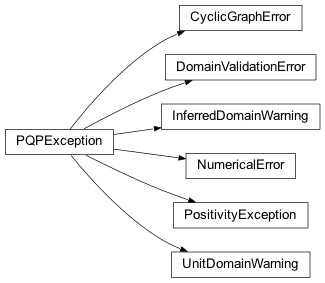

pqp.utils.exceptions Module¶
Classes¶
Exception raised when a graph is cyclic |
|
Exception raised when domain is used with invalid values |
|
Warning raised when the domain of a variable is inferred from provided examples |
|
Exception raised when numerical methods fail |
|
Base class for exceptions in this module. |
|
Exception raised when a nonpositive distribution is used |
|
Warning raised when the domain of a variable has cardinality <= 1 |
Class Inheritance Diagram¶
